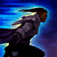

Habilidades

Passiva: DISPARO ILUMINADO
Sempre que Lucian usa uma Habilidade, seu próximo Ataque se transforma em um disparo duplo.Quando Lucian é curado ou protegido por um aliado, ou quando um Campeão inimigo próximo é imobilizado,
os próximos dois Ataques básicos dele causam Dano Mágico adicional.

Q: LUZ PERFURANTE
Lucian faz um disparo de luz perfurante através de um alvo.

W: CHAMA ARDENTE
Lucian dispara um projétil que explode em formato de estrela, marcando e revelando brevemente os inimigos.
Ele recebe Velocidade de Movimento por atacar inimigos marcados.

E: PERSEGUIÇÃO IMPLACÁVEL
Lucian avança rapidamente uma curta distância. Disparo Iluminado reduz o Tempo de Recarga de Perseguição Implacável.
R: O EXPURGO
Lucian desfere uma torrente de disparos de suas armas.